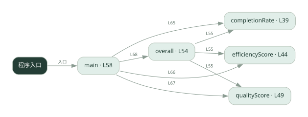

2-18 · 全课程第 38 节
多 Agent 协作评测
036.go
源码快照 db279ccad274 · 静态解析 · 2026-09-10
01 / 要完成的事
计算完成率、协作轮数对应的效率分和产出质量，再加权比较。
02 / 为什么要做
仅看最终答案无法体现协作成本和任务遗漏。
03 / 当前代码状态
主要展示本地计算、内存状态或模拟流程；是否写文件/启动子进程请看调用表。 本次只做静态解析，没有运行练习，也没有替你填写或修改原代码。
04 / 调用图
打开大图 ↗实线：源码中的直接调用；虚线：函数引用/注册、动态调用或按方法名推断的候选。L 是调用所在源码行号。箭头不表示执行顺序或每次必经；分支、循环、异步调度及框架内部调用需结合源码。灰色是外部/未解析目标，橙色是动态分发；省略 print、len 和常规容器操作以减少干扰。孤立函数可能尚未接入。

先从 main（程序入口） 出发，沿箭头找到本文件函数，再查看外部调用或动态分发。右侧调用清单保留所有静态调用点，能回到原文件逐行对照。
05 / 函数定位
| 函数 / 定义行 | 职责（源码注释） | 内部调用 |
|---|---|---|
completionRateL39 | completionRate：任务完成率 = 完成的子任务数 / 总子任务数（0~1） | float64 |
efficiencyScoreL44 | efficiencyScore：效率分 = 1 / 共识轮数（轮数越少越高效，轮数 1 得满分 1.0） | float64 |
qualityScoreL49 | qualityScore：产出质量分，直接读 run 的 quality | 未发现显式函数调用（可能直接计算、读写状态或尚未实现） |
overallL54 | overall：综合协作质量 = 完成率 0.4 + 效率 0.3 + 质量 0.3 加权求和 | completionRate, efficiencyScore, qualityScore |
mainL58 | 以源码函数体为准；下列调用展示其依赖。 | fmt.Println, completionRate, efficiencyScore, qualityScore, overall, fmt.Printf, float64, len |
这样做的优点
可以把多个评价维度放在一起比较。
代价与局限
权重是人为选择；少轮数不必然高质量，样例质量分也不是自动验证。
适用场景
架构对照实验、固定任务集的趋势比较。
不宜直接照搬
把单个综合分当作所有场景的绝对优劣。
动手检验理解
交换效率和质量的权重，观察排名是否变化。
有未实现位置时先预测，再补齐验证。能启动不等于逻辑正确。
查看全部 21 个静态调用 / 引用点
| 调用方 | 目标 | 源码行 | 类型 |
|---|---|---|---|
| completionRate | float64 | 40 | 调用 |
| completionRate | float64 | 40 | 调用 |
| efficiencyScore | float64 | 45 | 调用 |
| overall | completionRate | 55 | 调用 |
| overall | efficiencyScore | 55 | 调用 |
| overall | qualityScore | 55 | 调用 |
| main | fmt.Println | 59 | 调用 |
| main | fmt.Println | 60 | 调用 |
| main | fmt.Println | 61 | 调用 |
| main | completionRate | 65 | 调用 |
| main | efficiencyScore | 66 | 调用 |
| main | qualityScore | 67 | 调用 |
| main | overall | 68 | 调用 |
| main | fmt.Printf | 70 | 调用 |
| main | fmt.Printf | 71 | 调用 |
| main | float64 | 74 | 调用 |
| main | len | 74 | 调用 |
| main | fmt.Println | 75 | 调用 |
| main | fmt.Printf | 76 | 调用 |
| main | fmt.Println | 77 | 调用 |
| main | fmt.Println | 78 | 调用 |